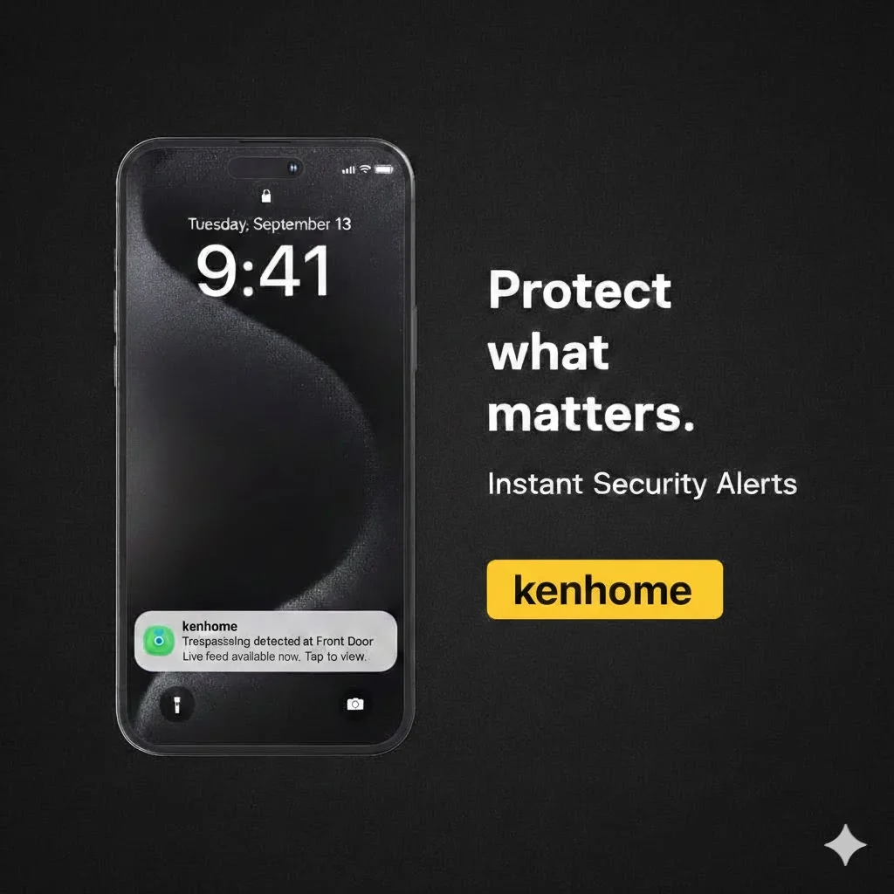

- Home
- Case studies
- Making Every Home Safer with Real-Time Alerts for Elderly, Kids, and Pets
Making Every Home Safer with Real-Time Alerts for
Elderly, Kids, and Pets
Families rely on periodic check-ins but incidents don't wait. KenHome brings continuous AI monitoring to any home camera, detecting falls, hazards, intrusions, and environmental threats the moment they happen.

The Problem with Periodic Check-Ins
Families often rely on scheduled calls or visits to check on elderly relatives, young children, or pets at home. Hours pass between check-ins and critical incidents don't wait for convenient timing.
Elderly Safety Gaps
Falls, wandering, and sudden health events often go unnoticed for hours. A loved one who has fallen cannot always call for help and periodic check-ins are too infrequent to prevent delayed medical response.
Children & Pet Hazards
Children and pets access hazardous areas stairways, kitchens, pools without warning. Traditional cameras record these moments but generate no alert until someone manually reviews footage.
Visitor & Package Vulnerability
Packages are stolen and intruders access properties while residents are unaware. Doorbell cameras notify after the fact not in time to prevent theft or intercept unauthorised access.
Environmental Threats
Smoke, gas leaks, floods, and fires can escalate within minutes. Standard sensors alert too late, and camera footage is only reviewed after an emergency has already developed.
Where KenHome Detects What Others Miss
Case 1 Elderly Safety
- Falls detected in under 3 seconds immediate alert sent to designated family members and emergency contacts
- Wandering detection for residents with dementia or mobility impairment alerts triggered when movement leaves defined safe zones
- Inactivity monitoring prolonged absence of expected movement patterns flagged automatically
Case 2 Pets & Children
- Hazardous area entry detection stairways, kitchens, garages, and pools monitored for unauthorised access
- Real-time alerts sent to parents the moment a child or pet enters a restricted zone
- Activity summaries and timeline views know exactly what happened and when, without reviewing hours of footage
Case 3 Visitor & Package Management
- Visitor detection with instant notification know who is at your door before they knock
- Package arrival and theft detection AI monitors delivery zones and flags suspicious loitering or removal
- Perimeter breach alerts for vehicles and individuals entering private property
Case 4 Home & Property Security
- Intrusion detection motion, posture, and behaviour analysis distinguishes residents from intruders
- Garage and outbuilding monitoring areas traditional systems miss are covered continuously
- Night-time and low-light detection maintains full accuracy across all conditions
Case 5 Fire & Environmental Safety
- Smoke and fire visual detection via camera alerts triggered before standard smoke sensors activate
- Flood and water ingress detection in basements, laundry rooms, and kitchens
- Gas leak and environmental anomaly alerts integrated with smart home systems for automated shutoffs
All five scenarios running continuously on cameras already installed in the home.
Why Existing Solutions Failed
Despite widespread camera and sensor adoption in homes, the core problem remained: recording is not monitoring.
- Standard home cameras record and store footage. No analysis, no alerts unless motion is detected at a basic threshold.
- Standalone sensors smoke, CO, and flood sensors act only on their single input. No cross-system intelligence or behaviour context.
- Wearables for elderly depend on the person activating them. Falls and sudden health events often prevent self-reporting.
- Alarm systems trigger on perimeter breach only. Cannot detect falls, child hazards, environmental threats, or behavioural anomalies indoors.
Continuous AI Protection. No New Cameras Needed.
KenHome activates intelligence inside your existing camera infrastructure delivering real-time alerts across all five safety scenarios from a single platform.
Elderly Monitoring & Fall Detection
AI analyses posture, movement, and inactivity patterns continuously. Falls and medical events trigger instant alerts to family and emergency contacts no wearable required.
Child & Pet Zone Protection
Define safe and restricted zones. KenHome alerts you the instant a child or pet enters a hazardous area kitchen, stairs, pool, or garage.
Home & Property Security
Intrusion detection that understands context distinguishing residents from intruders, delivery staff from threats, expected visitors from unexpected ones.
Visitor & Package Management
Instant notification when visitors arrive or packages are delivered. AI monitors delivery zones for theft attempts and flags suspicious behaviour automatically.
Fire & Environmental Alerts
Visual smoke and fire detection, flood monitoring, and environmental anomaly detection all through cameras already in place, before traditional sensors react.
Instant Alerts to the Right People
Every alert routed to the right person family members, carers, or emergency services with full video context attached so responders know exactly what they're walking into.
What KenHome Delivers
Are You Ready to Protect What Matters Most?
Book a 30-minute demo and see KenHome running live fall detection, zone alerts, and environmental monitoring in one dashboard.